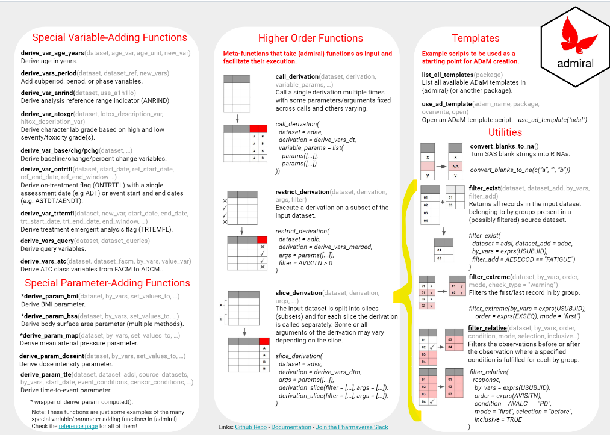

library(admiral)
library(pharmaversesdtm)
library(dplyr, warn.conflicts = FALSE)
library(tibble)Introduction
Filtering and merging datasets is the bread and butter of statistical programming. Whether it’s on the way to an ADaM variable derivation, or in an effort to pull out a list of patients matching a specific condition for a TLG, or another task entirely, most steps in the statistical programming workflow feature some combination of these two tasks.
The {tidyverse} functions filter(), group_by(), and*_join() are a fantastic toolset for filtering and merging, and can often suffice to carry out these sorts of operations. Often, however, this will be a multi-step process, requiring more than one set of pipe (%>%) chains if multiple datasets are involved. As such, the {admiral} package builds on this concept by offering a very practical toolset of utility functions, henceforth referred to altogether as filter_*(). These are wrappers of common combinations of {tidyverse} function calls that enable the ADaM programmer to carry out such operations “in stride” within their ADaM workflow - in typical {admiral} style!
Many of the filter_*() functions feature heavily within the {admiral} codebase, but they can be very handy in their own right. You can learn more about them from:
- The relevant section in the Reference page of the admiral documentation website;
- The short visual explanations in the second page of the {admiral Cheat Sheet};

- …and the rest of this blog post!
Required Packages
The examples in this blog post require the following packages.
We also create minimally viable ADSL, ADAE and EX datasets to be used where needed in the following examples.
adsl <- tribble(
~USUBJID, ~AGE, ~SEX,
"01-701-1015", 63, "F",
"01-701-1034", 77, "F",
"01-701-1115", 84, "M",
"01-701-1146", 75, "F",
"01-701-1444", 63, "M"
)
adae1 <- tribble(
~USUBJID, ~AEDECOD, ~AESEV, ~AESTDTC,
"01-701-1015", "DIARRHOEA", "MODERATE", "2014-01-09",
"01-701-1034", "FATIGUE", "SEVERE", "2014-11-02",
"01-701-1034", "HEADACHE", "MILD", "2014-12-01",
"01-701-1034", "APPLICATION SITE PRURITUS", "MODERATE", "2014-08-27",
"01-701-1115", "FATIGUE", "MILD", "2013-01-14",
"01-701-1146", "FATIGUE", "MODERATE", "2013-06-03",
"01-701-1146", "ANOSMIA", "MODERATE", "2013-08-11"
)
adae2 <- tribble(
~USUBJID, ~ADY, ~ACOVFL, ~ADURN,
"01-701-1015", 10, "N", 1,
"01-701-1015", 21, "N", 50,
"01-701-1015", 23, "Y", 14,
"01-701-1015", 32, "N", 31,
"01-701-1015", 42, "N", 20,
"01-701-1034", 11, "Y", 13,
"01-701-1034", 23, "N", 2,
"01-701-1146", 13, "Y", 12,
"01-701-1444", 14, "N", 32,
"01-701-1444", 21, "N", 41
)
ex <- tribble(
~USUBJID, ~EXSEQ, ~EXDOSE, ~EXTRT,
"01-701-1015", 1, 54, "XANO",
"01-701-1015", 2, 54, "XANO",
"01-701-1015", 3, 54, "XANO",
"01-701-1034", 1, 54, "XANO",
"01-701-1034", 2, 54, "XANO",
"01-701-1115", 1, 0, "PLACEBO",
"01-701-1115", 2, 0, "PLACEBO",
"01-701-1115", 3, 0, "PLACEBO",
"01-701-1146", 1, 0, "PLACEBO",
"01-701-1146", 2, 0, "PLACEBO",
"01-701-1146", 3, 0, "PLACEBO",
"01-701-1444", 1, 54, "XANO",
"01-701-1444", 2, 54, "XANO"
)filter_exist() and filter_not_exist()
Commonly we may wish to identify a set of patients from ADSL who satisfy (or do not satisfy) some condition. This condition can be relative to data found in ADSL or another ADaM dataset. For formal workflows, we would likely consider creating some sort of flag to encode this information, but for a more “quick and dirty” approach we can use filter_exist() or filter_not_exist().
For instance, suppose we want to obtain demographic information for the patients who have suffered moderate or severe fatigue using the datasets created above. A simple application of filter_exist() suffices: firstly, we feed in adsl as the input dataset and adae1 as the secondary dataset (inside which the filtering condition is applied). We make sure to specify by_vars = USUBJID to view the datasets patient-by-patient, and apply the condition on dataset_add (i.e. adae1) using the filter_add parameter.
filter_exist(
dataset = adsl,
dataset_add = adae1,
by_vars = exprs(USUBJID),
filter_add = AEDECOD == "FATIGUE" & AESEV %in% c("MODERATE", "SEVERE")
)# A tibble: 2 × 3
USUBJID AGE SEX
<chr> <dbl> <chr>
1 01-701-1034 77 F
2 01-701-1146 75 F For the negation of this task, we can instead use filter_not_exist() with the same arguments:
filter_not_exist(
dataset = adsl,
dataset_add = adae1,
by_vars = exprs(USUBJID),
filter_add = AEDECOD == "FATIGUE" & AESEV %in% c("MODERATE", "SEVERE")
)# A tibble: 3 × 3
USUBJID AGE SEX
<chr> <dbl> <chr>
1 01-701-1015 63 F
2 01-701-1115 84 M
3 01-701-1444 63 M That’s it! filter_exist() and filter_not_exist() are as simple as they are useful.
filter_extreme()
Another frequent task is to select the first or last observation within a by-group. Two possible examples where this may feature are a) selecting the most recent adverse event for a patient, or b) selecting the last dose for a patient.
We showcase below using filter_extreme() for the latter example. Using ex as defined above, we simply feed this into the function, specifying again to group the dataset by patient using by_vars = exprs(USUBJID) and order observations using the selection order = exprs(EXSEQ). Finally, we indicate that we are interested in the last dose for each patient through the mode = last:
filter_extreme(
dataset = ex,
by_vars = exprs(USUBJID),
order = exprs(EXSEQ),
mode = "last"
)# A tibble: 5 × 4
USUBJID EXSEQ EXDOSE EXTRT
<chr> <dbl> <dbl> <chr>
1 01-701-1015 3 54 XANO
2 01-701-1034 2 54 XANO
3 01-701-1115 3 0 PLACEBO
4 01-701-1146 3 0 PLACEBO
5 01-701-1444 2 54 XANO To select the first dose instead, an equivalent call with mode = first would do the trick.
One final argument which can be useful as a fail-safe, but isn’t showcased in the example above, is check_type. This can be set to "none", "warning" or "error" and will cause filter_extreme() to, respectively, do nothing, throw a warning, or throw an error if the observations of the input dataset are not unique with respect to the by variables and the order.
Note it is of course possible to achieve the same result using
{tidyverse}tools:
ex %>%
arrange(USUBJID, desc(EXSEQ)) %>%
group_by(USUBJID) %>%
filter(row_number() == 1) %>%
ungroup()# A tibble: 5 × 4
USUBJID EXSEQ EXDOSE EXTRT
<chr> <dbl> <dbl> <chr>
1 01-701-1015 3 54 XANO
2 01-701-1034 2 54 XANO
3 01-701-1115 3 0 PLACEBO
4 01-701-1146 3 0 PLACEBO
5 01-701-1444 2 54 XANO but it requires a few more functions and the code is slightly less readable.
filter_relative()
Other times we might find ourselves wanting to filter observations directly before or after the observation where a specified condition is fulfilled. Using {tidyverse} tools, this can quickly get quite involved. Enter filter_relative()!
In the example below we showcase how filter_relative() extracts the AEs directly after the first occurrence of AEDECOD == FATIGUE in the above-generated adae1. As before, we pass the dataset and by_vars arguments, after which we specify to order the observations by AESTDTC using order = exprs(AESTDTC) and the condition using condition = AEDECOD == "FATIGUE". Then, we specify we want records directly after the condition is satisfied using selection = after and that we do not want the reference observations (i.e. those that satisfy the condition) using inclusive = FALSE. Moreover, with mode = "first" we indicate that we want to use as reference the record where the condition is satisfied for the first time. Finally, we indicate that we do not want to keep the groups with no observations satisfying the condition with keep_no_ref_groups = FALSE:
filter_relative(
dataset = adae1,
by_vars = exprs(USUBJID),
order = exprs(AESTDTC),
condition = AEDECOD == "FATIGUE",
selection = "after",
inclusive = FALSE,
mode = "first",
keep_no_ref_groups = FALSE
)# A tibble: 2 × 4
USUBJID AEDECOD AESEV AESTDTC
<chr> <chr> <chr> <chr>
1 01-701-1034 HEADACHE MILD 2014-12-01
2 01-701-1146 ANOSMIA MODERATE 2013-08-11The arguments showcased above are flexible enough that we could modify our code accordingly for different scenarios. For instance, we could use selection = before to pick out any AEs directly before an occurrence of AEDECOD = "FATIGUE", or we could use mode = "last" to use as reference the record where the condition is satisfied for the last time.
filter_joined()
The functions we have seen so far in this post have had relatively well-defined remits, and so a relatively contained set of arguments. filter_joined(), however, breaks that mold: this function enables one to filter observations using a condition while taking other observations (possibly from a different dataset) into account. We present a simple example below.
Let’s try using adae2 to extract the observations with a duration longer than 30 days (ADURN >= 30) and on or after 7 days before a COVID AE (ACOVFL == "Y"). It is easier in this case to present the filter_joined() call and subsequently explain it:
filter_joined(
dataset = adae2,
dataset_add = adae2,
by_vars = exprs(USUBJID),
join_vars = exprs(ACOVFL, ADY),
join_type = "all",
order = exprs(ADY),
filter_join = ADURN > 30 & ACOVFL.join == "Y" & ADY >= ADY.join - 7
)# A tibble: 2 × 4
USUBJID ADY ACOVFL ADURN
<chr> <dbl> <chr> <dbl>
1 01-701-1015 21 N 50
2 01-701-1015 32 N 31Firstly, we note that filter_join() has been used because our condition is two-faceted. That is, to decide whether a certain record is of interest, we want (1) a duration of 30 days or more (this is information found within the record itself) and (2) proximity to a COVID AE (this is information gleaned from surrounding records - not the record itself). Because both conditions are relative to the adae2 dataset, we have set dataset = adae2 and dataset_add = adae2, i.e. we are joining adae2 onto itself. Then, we view the dataset patient-by-patient with by_vars = exprs(USUBJID) and order observations by analysis day using order = exprs(ADY).
All that is left is to specify our condition and how to select records relative to it. We start by noting that portion (1) of our condition uses the variable ADURN from the dataset specified in the dataset argument, and portion (2) requires ACOVFL and ADY from the secondary dataset specified in dataset_add. Consequently we need to specify join_vars = exprs(ACOVFL, ADY) to ensure we can use the latter variables in the filter_join argument. Then, for filter_join, we specify filter_join = ADURN > 30 & ACOVFL.join == "Y" & ADY >= ADY.join - 7, which translates to:
- Select records from
datasetwhereADURN > 30(these satisfy (1)); - Only keep those records if, after combining with
dataset_add, we can find a record indataset_addwhereACOVFL == "Y"andADYis within seven days ofADYfromdataset(this will satisfy (2).
In the filter_join argument, notice that .join syntax is used to refer to the variables come from dataset_add, and enables us to compare the same variable across observations (ADY >= ADY.join - 7). Note finally that join_type = "all" allows the user to consider all observations in dataset_add when joining.
For a much more detailed exposition of filter_join(), with more examples, consider visiting its reference page on the {admiral} website.
Conclusion
While it is true that the {tidyverse} functions can, if applied correctly, achieve lots of the objectives outlined in this post, with filter_*() we can often do everything in one fell swoop, and feel all the more sleek! Hopefully this post has highlighted the plethora of possibilities at your fingertips gifted by filter_*().
However, remember Uncle Ben’s maxim: “with great power comes great responsibility”. Although this was originally directed at a young Peter Parker, it is just as applicable to us ADaM programmers: always make sure to acquaint yourself with the documentation for the tool you are using - especially a behemoth like filter_joined() - to make sure your code does what you think it should do!
Last updated
2024-04-21 20:35:16.132421
Details
Reuse
Citation
BibTeX citation:
@online{mancini2024,
author = {Mancini, Edoardo},
title = {Filter Out the Noise!},
date = {2024-02-26},
url = {https://pharmaverse.github.io/blog/posts/2024-03-01_admiral_filter_functions/admiral_filter_functions.html},
langid = {en}
}
For attribution, please cite this work as:
Mancini, Edoardo. 2024. “Filter Out the Noise!” February
26, 2024. https://pharmaverse.github.io/blog/posts/2024-03-01_admiral_filter_functions/admiral_filter_functions.html.